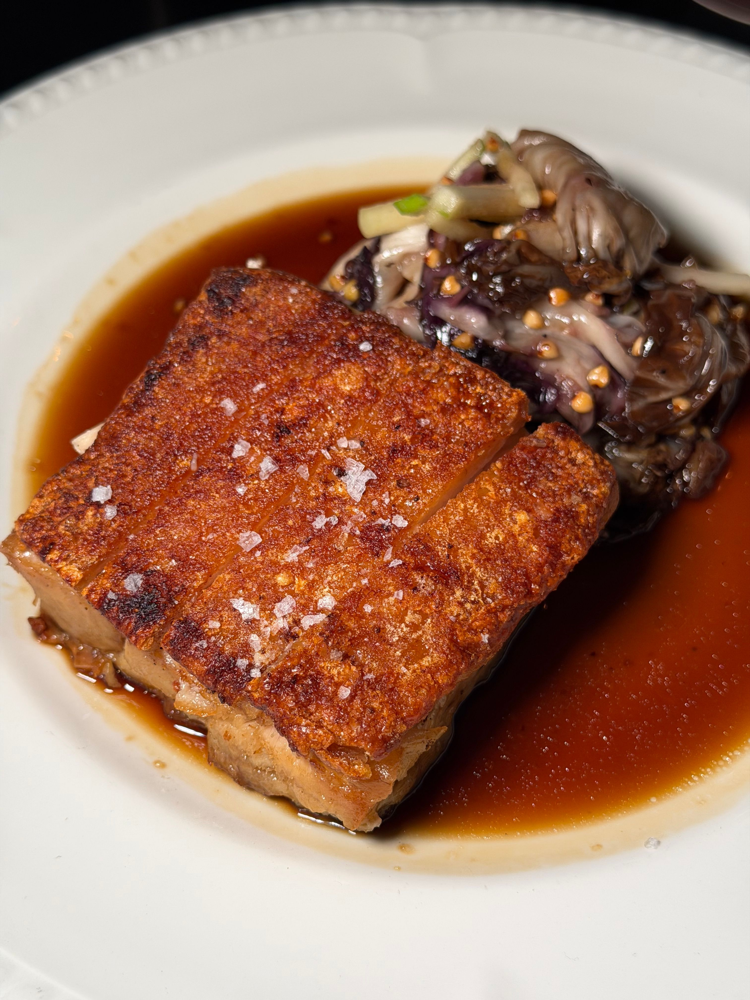

Cider Braised Pork Shoulder with Whole-Grain Mustard and Sage

Details
This cider braised pork shoulder is melt in your mouth delicious. It can be pulled apart and can be made ahead of time.
Surprisingly, this dish tastes a lot better the day after. The pork sits in the braise and becomes extra tender and flavorful.
Ingredients
- 1 bone-in pork shoulder, 9–10 lb, cut into 4 large chunks
- 3 tbsp Diamond Crystal kosher salt, 1 tbsp black pepper, 1 tbsp smoked paprika
- 2 tbsp neutral oil
- 3 yellow onions (sliced), 8 garlic cloves (smashed), 2 Granny Smith apples (cored, chunked)
- 4 cups fresh apple cider, 1 cup chicken stock, 1/2 cup bourbon (or more cider), 1/4 cup apple cider vinegar
- 6 tbsp whole-grain mustard (1/4 cup for the braise, 2 tbsp to finish)
- 6 sage sprigs, 6 thyme sprigs, 2 bay leaves
- Chopped parsley, for serving
Steps
- Rub the pork chunks with salt, pepper, and paprika. If you can, do this the night before.
- Heat the oil in a large Dutch oven (7–8 qt) over medium-high. Sear the chunks in batches until browned on 2–3 sides. Set aside.
- Add the onions and a pinch of salt. Cook 8 minutes until soft. Add the garlic and apples for 2 minutes. Pour in the bourbon and scrape up the browned bits.
- Add the cider, stock, vinegar, 1/4 cup mustard, and herbs. Return the pork. The liquid should come about halfway up.
- Cover tightly and braise at 300°F for 3 1/2–4 hours until the meat shreds easily with a fork.
- Move the pork to a large bowl. Skim the fat from the liquid, discard the herb stems and bay leaves, and boil the liquid hard for 15–20 minutes until reduced to about 3 cups. Stir in the remaining 2 tbsp mustard.
- Shred the pork, removing bones and any large fat pieces. Return it to the liquid and toss. Cool and refrigerate up to 3 days.
- Sunday: Reheat on the stovetop over low heat (or in a slow cooker on low) with a splash of stock, 30–40 minutes. Top with parsley. A slow cooker is also the best way to keep it warm at the potluck.
Home